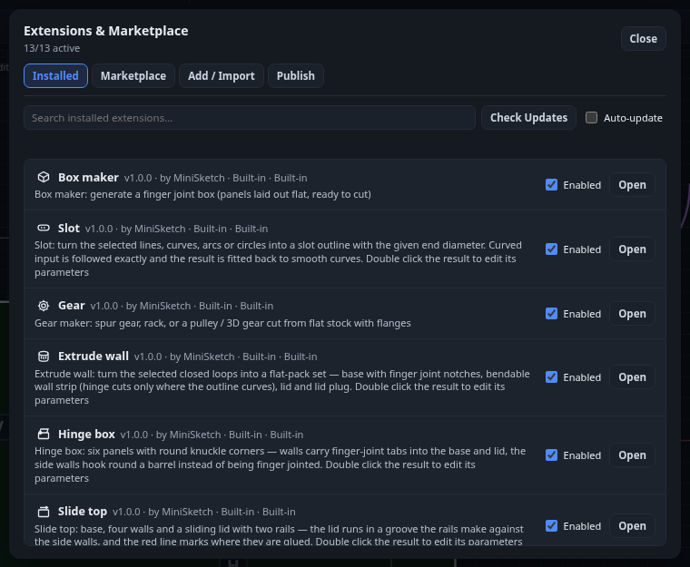

Panel Extensions & Marketplace
Panel Extensions terletak di bagian bawah sidebar kanan (menggantikan nama panel Tools sebelumnya). Di sini tersusun seluruh alat generator bawaan maupun ekstensi buatan Anda sendiri, hasil AI Chat Mode: Extension, file lokal .js, maupun paket dari Marketplace.
1. Panel Extensions di Sidebar Kanan
- Daftar tombol alat aktif: menampilkan semua generator yang sedang Enabled (bawaan 13 generator parametrik + ekstensi tambahan) lengkap dengan ikon vektor, label, dan nomor versi (mis.
v1.0.0). Angka di header panel (Extensions N) menunjukkan jumlah ekstensi yang sedang aktif. - Tombol
Check Updates: memeriksa apakah ada versi lebih baru untuk ekstensi yang dipasang dari Marketplace atau URL sumber tersimpan. Jika ada pembaruan, label berubah menjadiUpdates (N)berwarna biru agar bisa diperbarui satu klik. - Tombol
Marketplace…: membuka jendela Extension Manager & Marketplace (juga bisa dibuka lewat menu Tool ▸ Extensions & Marketplace…).
2. Jendela Extension Manager (4 Tab)
Klik Marketplace… atau Tool ▸ Extensions & Marketplace… untuk membuka dialog pengelola dengan empat tab:

| Tab | Fungsi & Tombol Utama |
|---|---|
| Installed |
Daftar semua alat yang terdaftar (bawaan maupun tambahan) dengan kolom pencarian dan label asal sumber (Built-in, AI Builder, Marketplace, URL, Local, Preview).• Sakelar Enabled / Disabled: menyembunyikan atau memunculkan tombol alat di panel Extensions tanpa menghapusnya. • Open: langsung membuka dialog parameter alat. • Edit, Publish, Export .js, Uninstall: tersedia untuk semua ekstensi non-bawaan. • Check Updates, Update All, & centang Auto-update: mengecek dan memasang versi baru otomatis saat aplikasi dibuka. |
| Marketplace |
Menelusuri katalog ekstensi komunitas. Secara bawaan membaca dari server lokal (api/marketplace/catalog atau marketplace/catalog.json), namun kolom URL di atas bisa diisi tautan catalog.json dari repositori GitHub atau jsDelivr CDN mana saja.• Filter berdasarkan kata kunci atau kategori. • Test Run: memuat ekstensi secara sementara (tidak disimpan permanen) dan langsung membuka dialognya untuk dicoba di kanvas. • Install / Update: memasang ekstensi secara permanen ke browser dan menyimpan URL sumbernya agar bisa diperbarui nanti. |
| Add / Import |
Memasang ekstensi dari berkas .js lokal (Load .js file…), URL mentah (Fetch URL), atau menulis/mengedit kode langsung di editor terintegrasi.• Syntax Highlighting warna untuk JavaScript, HTML/SVG, dan CSS serta dukungan tombol Tab untuk indentasi 2 spasi. • Validate: memeriksa sintaks JavaScript, keamanan ikon SVG, kecocokan ID elemen modal, serta kontrak API MiniSketch. • Test Run, Publish…, dan Install permanen ke localStorage.
|
| Publish |
Menerbitkan ekstensi agar bisa dibagikan ke pengguna lain: • Isi metadata (Extension ID, Display Name, Version, Author, Category, Description) atau klik Auto-fill metadata from code. • Target Cloud Community (Google Account): masuk dengan akun Google lalu terbitkan langsung ke katalog komunitas Cloud (dengan opsi timpa bila Anda sudah menerbitkan ID yang sama). • Target MiniSketch Server (Port 8090 / Hosted): unggah langsung ke katalog server lokal/hosted (opsional isi Publish Key bila server mengaktifkannya). • Target GitHub Static Repo (Free CDN): push langsung ke repositori GitHub dengan Personal Access Token ( contents:write, hanya disimpan di browser), atau klik Download .js + Copy catalog.json entry untuk commit manual.
|
3. Membuat Ekstensi dengan AI & Perbaikan Otomatis
Cara tercepat membuat alat CNC custom adalah melalui AI Chat — Mode: Extension. Alurnya:
- Pilih Mode: Extension di panel AI Chat, lalu jelaskan alat parametrik yang diinginkan (mis. "buatkan tool gantungan kunci dengan parameter diameter lubang dan offset base").
- Kode yang dihasilkan AI otomatis divalidasi dan muncul di Panel Testing Extension tepat di atas kotak prompt chat.
- Klik Test Run untuk mencoba dialog alat di kanvas tanpa mengotori daftar ekstensi permanen, atau klik Edit… bila ingin menyunting kodenya di tab Add / Import.
- Jika kode gagal validasi, klik Minta AI Perbaiki; dan jika error muncul saat alat dijalankan dengan seleksi di kanvas, tombol Fix with AI otomatis muncul di dialog alat untuk mengirim error beserta kodenya kembali ke AI agar diperbaiki.
- Jika sudah sesuai, klik Install agar alat tersimpan permanen di panel Extensions.
Extensions Panel & Marketplace
The Extensions panel lives at the bottom of the right sidebar (replacing the old Tools panel). It holds all built-in parametric generators alongside your own tools from AI Chat Mode: Extension, local .js files, and Marketplace packages.
1. Right-Sidebar Extensions Panel
- Active tool grid: displays every currently Enabled generator (the 13 built-in parametric tools plus custom extensions) with vector icon, label, and semantic version (e.g.
v1.0.0). The badge in the panel header (Extensions N) shows how many tools are active. Check Updatesbutton: checks for newer versions of extensions installed from a Marketplace catalog or saved source URL. When updates exist, the label turns blue (Updates (N)) for one-click upgrading.Marketplace…button: opens the Extension Manager & Marketplace dialog (also reachable from Tool ▸ Extensions & Marketplace…).
2. Extension Manager Window (4 Tabs)
Click Marketplace… or Tool ▸ Extensions & Marketplace… to open the four-tab manager:
| Tab | Purpose & Key Actions |
|---|---|
| Installed |
Lists all registered tools (built-in and custom) with search filtering and source badges (Built-in, AI Builder, Marketplace, URL, Local, Preview).• Enabled / Disabled toggle: hide or show a tool button in the Extensions panel without uninstalling it. • Open: launch the tool's parameter dialog. • Edit, Publish, Export .js, Uninstall: available on all non-built-in extensions. • Check Updates, Update All, & Auto-update: check and install newer versions automatically on startup. |
| Marketplace |
Browse community extension catalogs. By default it loads the local server catalog (api/marketplace/catalog or marketplace/catalog.json), and you can paste any GitHub or jsDelivr CDN catalog.json URL at the top.• Filter by keyword or category. • Test Run: load the extension temporarily (without saving) and open its dialog immediately. • Install / Update: save permanently to browser storage and keep the source URL for future updates. |
| Add / Import |
Load extensions from a local .js file (Load .js file…), fetch a raw URL (Fetch URL), or write/edit code directly in the integrated editor.• Color syntax highlighting for JavaScript, HTML/SVG, and CSS plus Tab 2-space indentation support. • Validate: checks JS syntax, safe SVG icon rules, matching modal element IDs, and MiniSketch tool contracts. • Test Run, Publish…, and permanent Install into localStorage.
|
| Publish |
Share your extension with others: • Fill metadata (Extension ID, Display Name, Version, Author, Category, Description) or click Auto-fill metadata from code. • Target Cloud Community (Google Account): sign in with Google and publish straight to the Cloud Community catalog (with option to update your existing ID). • Target MiniSketch Server (Port 8090 / Hosted): publish straight to your server catalog (optional Publish Key if configured). • Target GitHub Static Repo (Free CDN): push straight to GitHub using a Personal Access Token ( contents:write, stored only locally), or use Download .js + Copy catalog.json entry for manual commits.
|
3. Building Extensions with AI & Auto-Repair
The fastest way to create custom CNC generators is AI Chat — Mode: Extension:
- Select Mode: Extension in the AI Chat panel and describe the parametric tool you want (e.g. "build a keychain wrapper tool with hole diameter and outer offset inputs").
- The generated code is automatically validated and placed in the pinned Extension Testing Panel right above the chat prompt.
- Click Test Run to try the tool dialog on the canvas before committing, or click Edit… to refine the code in the Add / Import editor.
- If validation fails, click Fix with AI; if a runtime error occurs while testing on the canvas, a Fix with AI button also appears inside the tool dialog to send the error and code back for repair.
- Once satisfied, click Install to save the tool permanently in the Extensions panel.